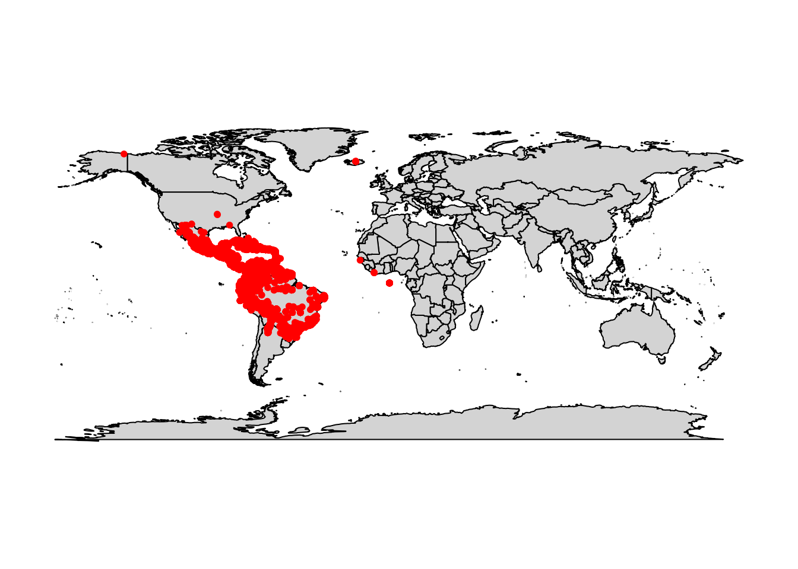
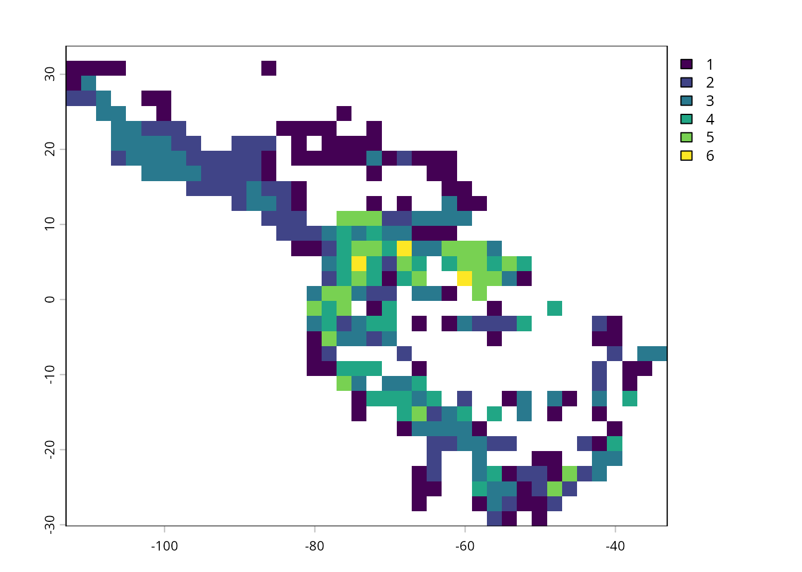
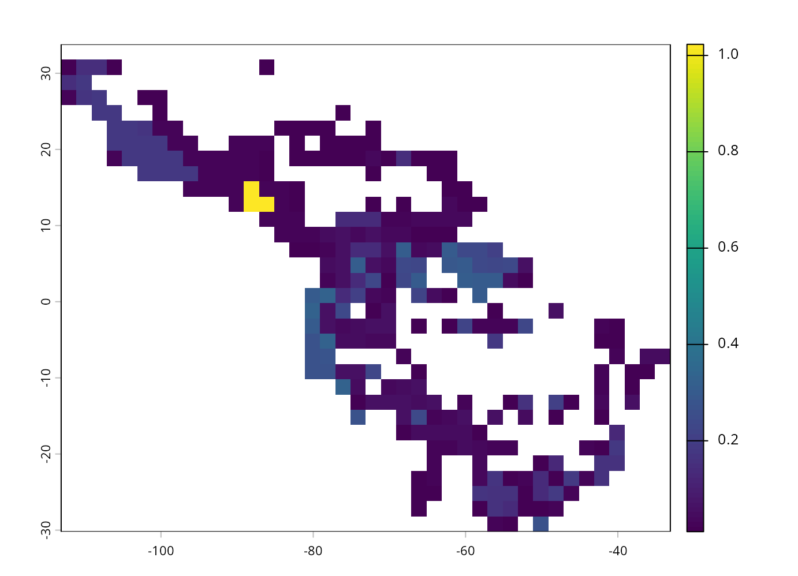

Omar Daniel
Leon-Alvarado¹²; J. Angel
Soto-Centeno²
¹ Department of Earth and Environmental Science, Rutgers University-Newark, NJ, USA.
² Department of Mammalogy, American Museum of Natural History, New
York City, NY, USA.
One of the goals of vilma is to make spatial
analyses easier to perform. For this reason, the geographic input format
is simple and straightforward to obtain. The Global Biodiversity
Information Facility (GBIF) is a globally recognized platform and
one of the most important biodiversity databases used in ecological and
evolutionary studies. From this resource, you can easily download
geographic information for any species, collected from multiple sources
such as museums or citizen-science platforms like iNaturalist. You may
either download data directly from the GBIF website or obtain it using
R. In this tutorial, you will see a small example showing how to use
Vilma with GBIF data.
1. Data from GBIF
In this example, you will work with one of the most common and well-known genera of fruit-eating bats: Artibeus. Species in this genus are large, widespread, and common across many landscapes, including densely populated cities. They occur from Mexico to Argentina, and therefore have abundant spatial and phylogenetic data available. For a spatial phylogenetic diversity analysis, you will need two things: occurrence records and a phylogenetic tree.
Let’s start with the occurrence data. You can obtain GBIF records either through the GBIF website or directly from R. Depending on the number of species and records you wish to analyze, one method may be more convenient than the other. In this example, you will work with data previously downloaded from GBIF, but you will also learn how to download it directly in R.
To retrieve data from GBIF in R, you will need the rgbif
package, which handles communication between R and the GBIF API. There
are two main functions to download data: occ_data and
occ_search. Here, you will use occ_search.
First, you will download data for a single species and extract the three
necessary columns: species, longitude, and latitude. Additional
parameters in occ_search help filter the results; in this
example, only records with coordinates will be downloaded
(hasCoordinate = TRUE).
Once the data is downloaded, you will apply a simple filter to retain
only records where the basis of record is
"PRESERVED_SPECIMEN". This helps reduce issues with
misidentifications by focusing on specimens curated in museum
collections. Although not all museum specimens are perfectly identified,
this approach provides a more reliable subset of data.
# Call the library
library(rgbif)
# Download the data
data_gbif <- occ_search(scientificName = "Artibeus lituratus", hasCoordinate = TRUE, limit = 200000)$data
# Filter by "PRESERVED_SPECIMEN"
data_gbif <- data_gbif[which(data_gbif$basisOfRecord == "PRESERVED_SPECIMEN"),]
# Extract the required columns
data_gbif <- data.frame(Species = as.factor(data_gbif$species),
Lon = as.numeric(data_gbif$decimalLongitude),
Lat = as.numeric(data_gbif$decimalLatitude))
Great! Now you have the data for the most widespread species in
this genus. However, you still need occurrence records for the remaining
species. To do this efficiently, you will use a loop to retrieve the
data for all other Artibeus species.
First, create a list object containing the names of the additional
species. The loop will then repeat the same steps used previously:
download the data for each species using occ_search, filter
the results to keep only "PRESERVED_SPECIMEN" records,
extract the required columns, and finally append each temporary data
frame (tmp_gbif) to the main data frame
(data_gbif) using rbind.
# Create species list vector
sp_list <- c("Artibeus concolor", "Artibeus fimbriatus", "Artibeus fraterculus", "Artibeus hirsutus",
"Artibeus inopinatus", "Artibeus jamaicensis", "Artibeus obscurus", "Artibeus planirostris")
# Loop
for(i in sp_list){
tmp_gbif <- occ_search(scientificName = i, hasCoordinate = TRUE, limit = 200000)$data
tmp_gbif <- tmp_gbif[which(tmp_gbif$basisOfRecord == "PRESERVED_SPECIMEN"),]
tmp_gbif <- data.frame(Species = as.factor(tmp_gbif$species),
Lon = as.numeric(tmp_gbif$decimalLongitude),
Lat = as.numeric(tmp_gbif$decimalLatitude))
data_gbif <- rbind(data_gbif, tmp_gbif) # Join data frames
}
# Save the results
write.csv(data_gbif, "../inst/extdata/Artibeus_occ.csv", row.names = F, quote = F)
head(data_gbif, 5L)#> Species Lon Lat
#> 1 Artibeus lituratus -78.54758 -3.61688
#> 2 Artibeus lituratus -78.54758 -3.61688
#> 3 Artibeus lituratus -78.62413 -3.67235
#> 4 Artibeus lituratus -78.62413 -3.67235
#> 5 Artibeus lituratus -78.53922 -3.58929If you prefer to use the data downloaded directly from the GBIF
website, you only need to read it into R with the
read.delim function and extract the relevant columns.
Although GBIF labels the file as a .csv, the fields are always
tab-separated, not comma-separated. For this reason, you should use
read.delim. If you use the base function
read.csv, the file will not be parsed correctly, and you
may encounter multiple column-format issues.
data_gbif <- read.delim("0011971-251120083545085.csv") # CSV from GBIF
data_gbif <- data.frame(Species = data_gbif$species,
Lon = as.numeric(data_gbif$decimalLongitude),
Lat = as.numeric(data_gbif$decimalLatitude))Now, an important reminder: GBIF data often contain errors and inconsistencies. Coordinates may have incorrect signs (negative values reported as positive or vice versa), some records appear as 0, 0, and GPS inaccuracies may place points far from their true locations. In this example, the only filter applied was to restrict the dataset to museum specimens, but in real analyses you must clean your data carefully before using it — not only for Vilma, but for any package, model, or algorithm. Proper data cleaning is essential to avoid bias, misinterpretation, and incorrect spatial or phylogenetic results.
For this example, you can quickly inspect the points using the
map function and visualize the distribution of the
occurrences. As you can see, many points fall outside the natural range
of these species, appearing in places such as Africa, Iceland, and
Alaska.
library(maps)
map(database = "world", fill = TRUE, col = "lightgray", bg = "white")
points(data_gbif$Lon, data_gbif$Lat, pch = 20, col = "red")
In this case, to keep the example simple (although this is not the best option in real analyses), you will remove the points that fall outside the natural range of the species. The first step is to create the geographic limits, similar to a bounding box, restricting the X and Y coordinates to the area between the southern United States and Argentina. Once these limits are defined, you can subset the dataset to keep only the points that fall within this range.
Now that all points have been checked and are reasonably cleaned, you can proceed to the next part of the analysis.
# Limits
xmin <- -119 # West limit
xmax <- -30 # East limit
ymin <- -35 # South limit
ymax <- 35 # North limit
# Filter
data_gbif <- subset(data_gbif,
Lon >= xmin & Lon <= xmax &
Lat >= ymin & Lat <= ymax)
# Filter
map(database = "world", fill = TRUE, col = "lightgray", bg = "white")
points(data_gbif$Lon, data_gbif$Lat, pch = 20, col = "red")2. Phylogenetic Tree
Next, you need a phylogenetic tree. Unfortunately, many studies
today do not publish their phylogenies in useful or reproducible formats
such as Newick or Nexus files, which can make obtaining a proper tree
challenging. Sometimes, the only available option is to manually
reconstruct a tree from a figure in the article.
To ensure accuracy in this tutorial, you will use a phylogenetic tree obtained from VertLife – Phylogeny Subsets. This NSF-funded project integrates multiple databases to generate phylogenetic trees for any specified list of species. In this case, the tree is generated specifically for the species of interest in the genus Artibeus.
Now, you will read the tree using the read.nexus
function from the ape package and inspect its structure.
library(ape)
library(phytools)
artibeus_tree <- read.nexus("../inst/extdata/artibeus_tree.nex")
# or
# data(artibeus_tree)
length(artibeus_tree) # Check number of trees
#> [1] 5
plot(artibeus_tree)Now that you have all the necessary data, you must check that the species names match between the occurrence dataset and the phylogenetic tree. This step is essential not only for Vilma, but for any package or method that computes phylogenetic diversity indices. If the names do not match exactly, the analyses will fail or produce incorrect results.
intersect(unique(data_gbif$Species), artibeus_tree$tip.label) # Check the intersect, but value is 0 !
#> character(0)
unique(data_gbif$Species)
#> [1] "Artibeus lituratus" "Artibeus concolor" "Artibeus fimbriatus"
#> [4] "Artibeus fraterculus" "Artibeus hirsutus" "Artibeus inopinatus"
#> [7] "Artibeus jamaicensis" "Artibeus obscurus" "Artibeus planirostris"
#> [10] "Artibeus amplus"
artibeus_tree$tip.label
#> [1] "'Ariteus_flavescens'" "'Artibeus_concolor'"
#> [3] "'Artibeus_inopinatus'" "'Artibeus_hirsutus'"
#> [5] "'Artibeus_fraterculus'" "'Artibeus_jamaicensis'"
#> [7] "'Artibeus_fimbriatus'" "'Artibeus_lituratus'"
#> [9] "'Artibeus_obscurus'" "'Artibeus_planirostris'"
#> [11] "'Artibeus_amplus'"So, there is no match between the species names! This happens because
the genus and species epithet in the phylogenetic tree are separated by
an underscore (_) instead of a space, and a “’” symbol. You can fix this
mismatch using the gsub function, which replaces one
pattern with another. This function is extremely useful in many
situations, so it is worth learning how it works. After correcting the
names and running the intersect function again, you will
see that all species now match correctly.
# New tip.label
artibeus_tree$tip.label <- gsub("_", " ", artibeus_tree$tip.label) # Replace "_" by " " in $tip.label
artibeus_tree$tip.label <- gsub("'", "", artibeus_tree$tip.label) # Replace "'" by "" in $tip.label
intersect(unique(data_gbif$Species), artibeus_tree$tip.label)
#> [1] "Artibeus lituratus" "Artibeus concolor" "Artibeus fimbriatus"
#> [4] "Artibeus fraterculus" "Artibeus hirsutus" "Artibeus inopinatus"
#> [7] "Artibeus jamaicensis" "Artibeus obscurus" "Artibeus planirostris"
#> [10] "Artibeus amplus"Note that there is one species in the phylogeny that is missing from the distribution data: Ariteus flavescens. This is fine. This species is the outgroup used to root the tree, so you do not need occurrence records for it.
3. The vilma.dist object
Now that you have both the occurrence data and the phylogenetic tree,
you can proceed to the next step: building the vilma.dist
object. This object is the foundation for all phylogenetic diversity
analyses in Vilma. To create it, you will use the
points_to_raster function. This function transforms the
occurrence records into several spatial objects and combines them into a
single S4 vilma.dist object.
First, if you do not have the package installed, the easiest way to
get the latest version is through its GitHub repository. To do
this, you will need the devtools package.
install.packages("devtools")
devtools::install_github("oleon12/vilma", build_vignettes = FALSE)Now you can create the vilma.dist object. The
points_to_raster function generates a raster with species
richness and abundance values per pixel. The user also defines the pixel
size; in this example, the raster will have a resolution of 2 degrees.
Once the vilma.dist object is created, you can inspect the
spatial information it contains using the print
function.
library(terra)
library(vilma)
raster_out <- points_to_raster(points = data_gbif, res = 2, crs = 4326)
print(raster_out)
#>
#> vilma.dist Object Summary
#> -------------------------
#>
#> Distribution Matrix:
#> - Species: 10 unique taxa
#> - Cells: 295 spatial units
#> - Records: 43454 total observations
#>
#> Species Abundance Summary:
#> - Range: 114 - 19402 observations per species
#> - Total: 43454 observations
#> - Mean: 4345.4 +/- 6761.6 (SD) observations per speciesYou can also inspect all the components stored inside the
vilma.dist object. The first element is a
data frame that contains every occurrence record along with
its corresponding raster cell. The object also includes three raster
files. The first one (grid) is an empty raster with the
predefined resolution, which will be used by the index functions. The
second one (r.raster) is the raster with species richness values,
and the third one (ab.raster) is the raster with abundance
values.
You can visualize any of these rasters using the plot
function, or generate an interactive map using
view.vilma.
str(raster_out)
#> List of 4
#> $ distribution:'data.frame': 43454 obs. of 4 variables:
#> ..$ Sp : chr [1:43454] "Artibeus lituratus" "Artibeus lituratus" "Artibeus lituratus" "Artibeus lituratus" ...
#> ..$ Lon : num [1:43454] -78.5 -78.5 -78.6 -78.6 -78.5 ...
#> ..$ Lat : num [1:43454] -3.62 -3.62 -3.67 -3.67 -3.59 ...
#> ..$ Cell: num [1:43454] 738 738 738 738 738 738 738 621 621 498 ...
#> $ grid :S4 class 'SpatRaster' [package "terra"]
#> $ r.raster :S4 class 'SpatRaster' [package "terra"]
#> $ ab.raster :S4 class 'SpatRaster' [package "terra"]
#> - attr(*, "class")= chr "vilma.dist"
plot(raster_out$r.raster)
4. Phylogenetic Diversity Indices
Now that you have the vilma.dist object, you are ready
to calculate a phylogenetic diversity index. In this example, you will
compute Phylogenetic Endemism (PE). This metric measures the
amount of unique evolutionary history restricted to each cell by
weighting branch lengths according to the geographic range of the
lineages they represent. PE highlights areas that contain evolutionarily
distinct or range-restricted lineages and is commonly used to detect
centers of paleo- or neo-endemism.
Before continuing, you should be aware that this index uses pairwise distance matrices, which means you need at least two species per community, or in this case, per pixel or cell. However, as you saw in the previous plot, many cells contain only a single species. This is an edge case and can be problematic.
In most packages, these cells are simply removed and their values
returned as NA, but vilma offers three different options to
handle this situation and still include evolutionary information for
single-species cells. The first option is root, which
calculates the distance from the species’ tip to the root of the tree;
this distance is then used as the MPD value for that cell. This approach
works well for small trees but can become overly sensitive or inflated
when using very large phylogenies. The second option is
node, which calculates the distance from the tip to the
most recent common ancestor (MRCA); this branch length is used as the
MPD value for that cell. This method is often more stable for large
trees.
Finally, if you prefer, you can remove single-species cells entirely
by using the exclude method, which sets these cells to NA.
For this example, you will use the root method, as the tree is
small.
pe_out <- pe.calc(tree = artibeus_tree, dist = raster_out,faith.method = "root")
print(pe_out)
#>
#> vilma.pd Object Summary
#> -------------------------
#>
#> Distribution Matrix:
#> - Species: 10 unique taxa
#> - Cells: 295 spatial units
#> - Records: 43454 total observations
#>
#> Species Abundance Summary:
#> - Range: 114 - 19402 observations per species
#> - Total: 43454 observations
#> - Mean: 4345.4 +/- 6761.6 (SD) observations per species
#>
#> SR Summary:
#> - Range: 1.00 - 6.00
#> - Mean: 2.48 +/- 1.32 (SD)
#>
#> PD Summary:
#> - Range: 0.01 - 1.02
#> - Mean: 0.09 +/- 0.13 (SD)
#>
#> RPE Summary:
#> - Range: 0.00 - 0.08
#> - Mean: 0.01 +/- 0.01 (SD)
#>
#> - Index: pe.calc
#view.vilma(pd_out)
plot(pe_out$rasters$pd.raster)
view.vilma(pe_out)That’s it! You have now completed a spatial phylogenetic diversity
analysis. From here, you can explore your results, try other indices,
save outputs using the write.vilma functions, run null
models, and even calculate beta-diversity indices. Finally, let’s
examine the structure of the output object, which in this case is a
vilma.pd object.
The vilma.pd object is generated by all alpha-diversity
functions. It contains several elements, including:
- distribution: a data frame identical to the one in the vilma.dist object, showing every occurrence and the cell it belongs to.
- grid: an empty raster with the original resolution defined in the vilma.dist object.
- pd.table: a data frame summarizing the richness, abundance, and phylogenetic diversity values for each cell.
- rasters: a list containing the richness, abundance, and phylogenetic diversity rasters.
- index.info: a vector storing information about the index used.
str(pe_out)
#> List of 5
#> $ distribution:'data.frame': 43454 obs. of 4 variables:
#> ..$ Sp : chr [1:43454] "Artibeus lituratus" "Artibeus lituratus" "Artibeus lituratus" "Artibeus lituratus" ...
#> ..$ Lon : num [1:43454] -78.5 -78.5 -78.6 -78.6 -78.5 ...
#> ..$ Lat : num [1:43454] -3.62 -3.62 -3.67 -3.67 -3.59 ...
#> ..$ Cell: num [1:43454] 738 738 738 738 738 738 738 621 621 498 ...
#> $ grid :S4 class 'SpatRaster' [package "terra"]
#> $ pd.table :'data.frame': 295 obs. of 4 variables:
#> ..$ Cell: chr [1:295] "41" "42" "43" "44" ...
#> ..$ SR : num [1:295] 1 1 1 1 1 1 3 2 2 3 ...
#> ..$ PD : num [1:295] 0.0154 0.1487 0.1487 0.0154 0.0154 ...
#> ..$ RPE : num [1:295] 0.00293 0.02834 0.02834 0.00293 0.00293 ...
#> $ rasters :List of 3
#> ..$ ab.raster:S4 class 'SpatRaster' [package "terra"]
#> ..$ r.raster :S4 class 'SpatRaster' [package "terra"]
#> ..$ pd.raster:S4 class 'SpatRaster' [package "terra"]
#> $ index : chr "pe.calc"
#> - attr(*, "class")= chr "vilma.pd"5. Conclusion
In this tutorial, you learned how to use vilma with
occurrence data obtained from GBIF. You first downloaded or read species
occurrence records, selected the columns required by vilma,
and applied basic filters to reduce common spatial errors. You also
learned the importance of checking species names between the occurrence
data and the phylogenetic tree, since exact name matching is required
for phylogenetic diversity analyses.
After preparing the data, you created a vilma.dist
object using points_to_raster, inspected its structure, and
used it to calculate Phylogenetic Endemism. This example showed how
vilma transforms occurrence points into raster-based inputs and then
uses those spatial objects together with a phylogeny to estimate
phylogenetic diversity patterns.
Overall, this tutorial provides a basic workflow for moving from raw GBIF records to spatial phylogenetic diversity outputs in vilma. From this point, you can apply additional data-cleaning steps, test other alpha or beta phylogenetic diversity indices, visualize the results, and export the outputs for further ecological, evolutionary, or conservation analyses.